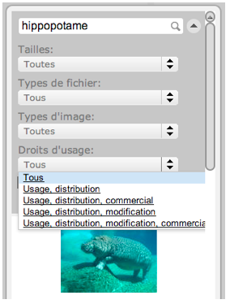

Open-Sankoré permet de rechercher directement des images depuis le web en utilisant le moteur de Google Images.
Choisir le moteur «Google Images» puis renseigner le champ de recherche en haut.
Vous pouvez également utiliser des filtres de taille, de type d’illustration et de licence.
Notez que les images sont proposées après un filtrage strict des contenus utilisant la fonction «Safe Search» de Google.
Ce widget de recherche est disponible dans le dossier "Recherche Web" de la bibliothèque.
|
 |